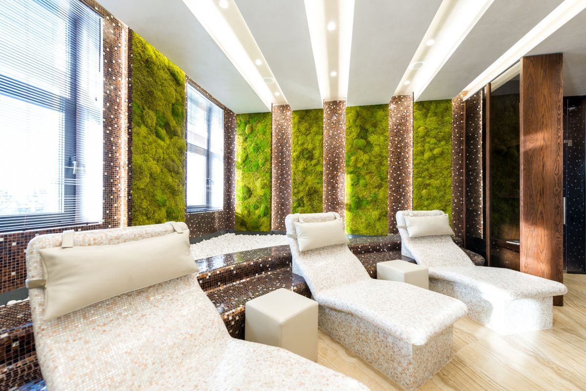

Le choix se joue rarement sur l'esthétique — les trois familles peuvent être belles. Il se joue sur ce que le lieu peut accueillir : de l'eau, de la lumière, un accès de maintenance et un budget annuel. Cinq questions suffisent à trancher.

Posez-les dans cet ordre. Chacune élimine des options, et la cinquième ne sert souvent qu'à confirmer.
Question éliminatoire. Le stabilisé est strictement réservé à l'intérieur : la pluie, le gel et les ultraviolets le détruisent. Dehors, il ne reste que le végétal vivant rustique irrigué ou l'artificiel traité anti-UV. Les principes sont détaillés sur la page mur végétal extérieur.
Un mur naturel réclame une lumière suffisante dix à douze heures par jour. Fenêtre proche, verrière, plateau lumineux : le vivant est envisageable. Couloir borgne, cage d'escalier, fond de boutique : il faut ajouter un éclairage horticole, à budgéter 100 à 300 € par m², sinon passer au stabilisé.
Alimentation, évacuation ou bac de récupération, prise électrique pour la pompe. Si créer ce réseau est impossible — plateau loué, refus du bailleur, cloison isolée, mur au-dessus d'un escalier —, le naturel devient très coûteux ou irréaliste. Le stabilisé n'a besoin de rien.
C'est la question la plus déterminante à cinq ans, et la moins posée. Un mur naturel coûte 80 à 200 € HT par m² et par an. Sur 15 m² pendant cinq ans, cela représente une somme comparable à une bonne part du coût d'installation. Si ce budget n'est pas voté, ne choisissez pas le vivant.
Un décor durable et stable, une présence vivante qui évolue, ou un traitement acoustique documenté ? La réponse oriente vers le stabilisé, le naturel ou un panneau végétalisé sur support absorbant, comme l'explique la page mur végétal acoustique.
Prix hors taxes constatés en France, pose comprise, hors travaux préalables d'électricité et de plomberie.
| Critère | Naturel vivant | Stabilisé | Artificiel |
|---|---|---|---|
| Aspect | Vivant, évolutif, profondeur maximale | Vrais végétaux figés, texture très fidèle | Synthétique, convaincant à distance |
| Durée de vie | Indéfinie si entretenu, plants renouvelés | Plusieurs années à l'abri | Plusieurs années en intérieur |
| Entretien | 4 à 12 visites/an, taille, engrais | Dépoussiérage occasionnel | Dépoussiérage, lavage possible |
| Lumière requise | Élevée, 10 à 12 h/jour | Aucune — éviter le soleil direct | Aucune |
| Eau requise | Irrigation automatique, évacuation | Aucune | Aucune |
| Poids au m² | 40 à 100 kg gorgé d'eau | Léger, quelques kg | Très léger |
| Usage extérieur | Oui avec végétaux rustiques | Non | Oui si traité anti-UV |
| Apport acoustique | Réel, variable | Réel, documenté sur support absorbant | Faible |
| Prix au m² HT posé | 600 – 1 200 € | 400 – 900 € | 150 – 400 € |
| Coût annuel HT | 80 – 200 €/m²/an | négligeable | négligeable |
Suivez les branches dans l'ordre : la première condition non remplie détermine votre réponse.
Le stabilisé est exclu. Si vous acceptez une irrigation et un entretien saisonnier, partez sur des végétaux rustiques : heuchères, carex, sedums, fougères rustiques. Si l'accès à l'eau est impossible ou l'exposition trop rude, l'artificiel traité anti-UV reste la seule option raisonnable, à 150 à 400 € le m².
Mur végétal extérieur →C'est le cas le plus répandu : plateau loué, couloir, salle de réunion, fond de boutique. Le stabilisé s'impose sans hésitation, à 400 à 900 € le m² posé. Aucun réseau à créer, aucun contrat d'entretien, un démontage possible en fin de bail. Ajoutez un support absorbant si l'acoustique compte.
Mur végétal stabilisé →Le vivant devient pertinent, à 600 à 1 200 € le m² posé hors irrigation, à condition que le budget d'entretien annuel soit validé. C'est le seul système qui évolue, régule l'hygrométrie locale et donne cette impression de profondeur qu'aucune autre solution ne reproduit vraiment.
Mur végétal naturel →La même logique s'applique au-delà du mur : un plafond végétal ou un arbre sur mesure se traitent en stabilisé à l'intérieur sec, en artificiel dès que l'exposition l'exige.
Elles coûtent cher, et se produisent presque toujours au moment du choix, pas au moment de la pose.
L'erreur numéro un. Le mur est installé, magnifique la première année, puis le contrat n'est pas renouvelé pour raison budgétaire. Le résultat est un mur dégarni en vitrine de l'entreprise — l'inverse exact de l'effet recherché. Décidez du budget annuel avant de décider du système, jamais l'inverse.
Le stabilisé craint deux choses : les ultraviolets, qui décolorent, et l'humidité permanente, qui dégrade les mousses. Une vitrine plein sud, une salle de bain ou un espace spa sont donc à proscrire. C'est une erreur fréquente en commerce, où l'on cherche naturellement la visibilité depuis la rue.
Les spots décoratifs existants ne remplacent jamais un éclairage horticole. Un mur naturel sous-éclairé s'étiole lentement : les tiges s'allongent, les feuilles pâlissent, le bas se dégarnit. Le budget lumière — 100 à 300 € par m² — fait partie du projet, pas des options.
Un mur installé au-dessus d'un mobilier fixe, d'un escalier ou d'un bar coûte deux fois plus cher à entretenir — et finit souvent par ne plus l'être. Prévoyez un dégagement devant le mur et un accès sur toute sa hauteur dès la conception. Voir installation et support.
Une fois la famille identifiée, seul un installateur peut établir un tarif ferme : il dépend du support, de la hauteur, de l'accès et des travaux annexes.
Rien n'oblige à choisir une seule famille pour tout un bâtiment. Il est courant d'installer un mur naturel dans le hall, là où l'eau et la lumière existent, et des panneaux stabilisés dans les salles de réunion et les couloirs. La cohérence visuelle se travaille alors sur les teintes, les formats et les cadres. Signalez-le dans votre demande : cela change la conception.
Verdalys ne conçoit ni n'installe de murs végétaux. Nous cadrons votre projet — type de mur, surface, contexte, délai — et le transmettons à un installateur partenaire pertinent, qui vous rappelle sous 24 h ouvrées et établit un devis détaillé après visite. La mise en relation est gratuite et sans engagement.
Gratuit, sans engagement — nous orientons votre projet vers le bon système.
Démarrer ma demande